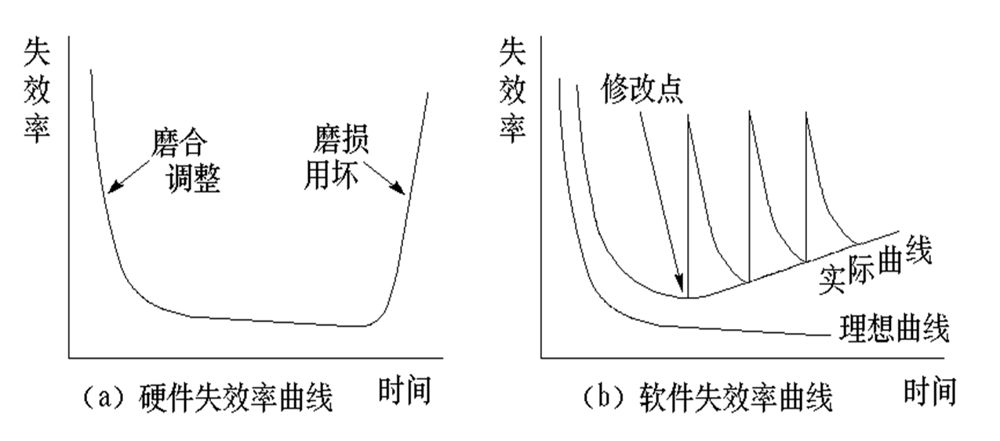
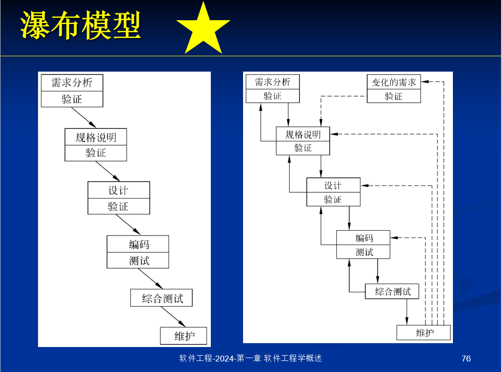
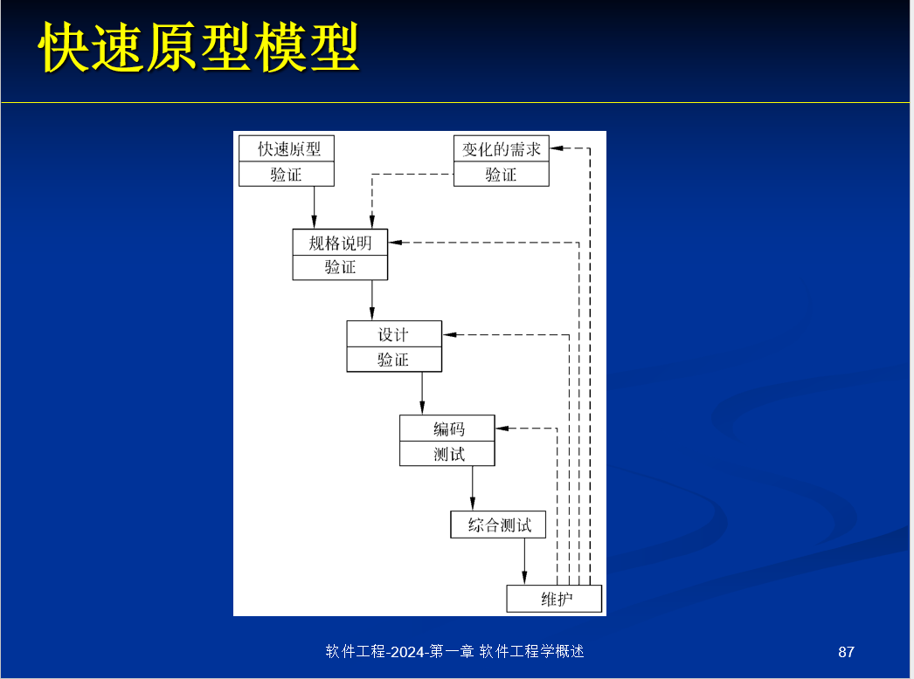
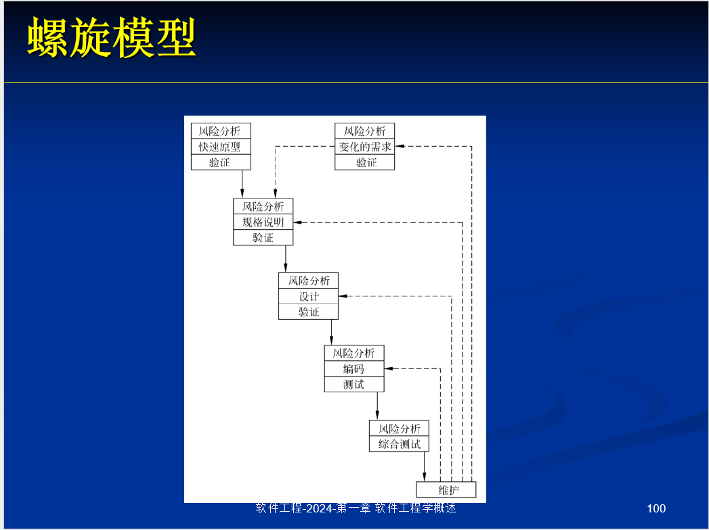
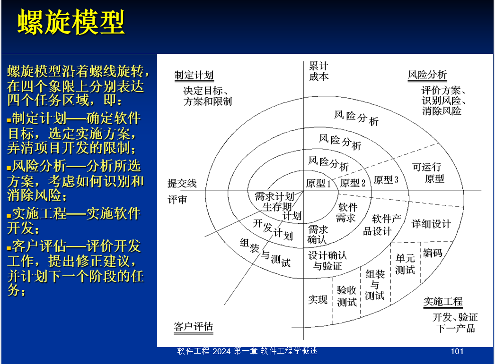
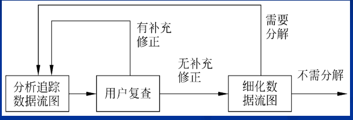

软件工程
软件工程学概述
1. 什么是软件？
软件是计算机系统中与硬件相互依存的另一部分，它是包括程序、数据及其相关文档的完整集合。其中：
- 程序是按事先设计的功能和性能要求执行的指令序列；
- 数据是使程序能正常操纵信息的数据结构；
- 文档是与程序开发、维护和使用有关的图文材料。
2. 软件的特点
-
软件是一种逻辑实体，而不是具体的物理实体，因而它具有抽象性；
-
软件的生产与硬件不同，在它的开发中没有明显的制造过程。对软件的质量控制，必须着重在软件开发方面下功夫；
-
与硬件不同，软件在运行和使用期间，没有机械磨损、老化问题；
-
硬件磨损可以用备用零件替换；软件出故障无法用备用零件替换，因为设计开发过程中存在错误；
-
软件维护比硬件维护更复杂，它与硬件的维修有本质差别；

-
虽然软件不存在磨损与老化，但它存在退化问题，软件退化缘于修改。
3. 软件危机
- 在程序系统阶段，软件技术的发展不能满足需要，“软件危机”就这样出现了。
- 软件危机是指：在计算机软件的开发和维护过程中所遇到的一系列严重问题。
- 几乎所有软件都不同程度地存在这些问题。
- 大体上，这些问题分为两方面：
- 如何开发软件，以满足对软件日益增长的需求；
- 如何维护数量不断膨胀的已有软件。
4. 软件工程的定义
- 软件工程是指导计算机软件开发和维护的一门工程学科。采用工程的概念、原理、技术和方法来开发与维护软件，把经过时间考验而证明正确的管理技术和当前能够得到的最好的技术方法结合起来，以经济地开发出高质量的软件并有效地维护它。
5. 软件工程的基本原理
著名的软件工程专家 B.W. Boehm 于 1983 年提出了软件工程的七条基本原理。他认为这七条原理是确保软件产品质量和开发效率的原理的最小集合：
-
用分阶段的生命周期计划严格管理；
- 把软件生命周期划分成若干阶段，并相应制定出切实可行的计划，并严格按照计划对软件的开发与维护工作进行管理。
-
坚持进行阶段评审；
- 大部分错误是在编码之前造成的，例如，根据 Boehm 等人的统计，设计错误占软件错误的 63%，编码错误仅占 37%。
- 错误发现与改正得越晚，所需付出的代价也越高。
-
实行严格的产品控制；
- 当改变需求时，为了保持软件各个配置成分的一致性，必须实行严格的产品控制，主要是实行基准配置管理。
- 基准配置又称为基线配置，是经过阶段评审后的软件配置成分（各个阶段产生的文档或程序代码）。
- 基准配置管理也称为变动控制：一切有关修改软件的建议，特别是涉及到对基准配置的修改建议，都必须按照严格的规程进行评审，获得批准后才能实施修改。
-
采用现代程序设计技术；
- 实践表明，采用先进的技术既可提高软件开发和维护的效率，又可提高软件产品的质量。
-
结果应能清楚地审查；
- 为了提高软件开发过程的可见性，更好地进行管理，应该根据软件开发项目的总目标及完成期限，规定开发组织的责任和产品标准，从而使得所得到的结果能够清楚地审查。
-
开发小组的成员应该少而精；
- 开发小组人员的素质和数量是影响软件产品质量和开发效率的重要因素。
-
承认不断改进软件工程实践的必要性。
- 不仅要积极主动地采纳新的软件技术，而且要注意不断总结经验，评价新的软件技术的效果，指明必须着重开发的软件工具和应该优先研究的技术。
6. 软件工程方法学三要素
通常把在软件生命周期全过程中使用的一整套技术方法的集合称为方法学（methodology），也称为范型（paradigm）。
- 方法：完成软件开发的各项任务的技术方法，回答“怎样做”的问题；
- 工具：软件工具为软件工程方法提供了自动或半自动的软件支撑环境；
- 如果这些工具能够集成起来，即一个工具产生的信息可被另一个工具使用时，称这样的支持软件开发的系统为 CASE（计算机辅助软件工程）；
- 过程：是为了获得高质量软件所需要完成的一系列任务的框架，规定完成各项任务的步骤，将软件工程的方法和工具综合起来以达到合理、及时地进行软件开发的目的。它定义了：
- 方法使用的顺序；
- 要求交付的文档资料；
- 为保证质量和适应变化所需要的管理；
- 软件开发各个阶段完成的里程碑。
目前使用得最广泛的软件工程方法学分别是传统方法学和面向对象方法学。
7. 传统方法学
- 传统方法学又称生命周期方法学或结构化范型。
- 采用结构化技术（结构化分析、结构化设计和结构化实现）来完成软件开发的各项任务，并使用适当的软件工具或软件工程环境来支持结构化技术的运用。
- 把软件生命周期的全过程划分为若干个阶段：
- 前一阶段是基础、前提；后一阶段是细化；
- 每一个阶段的开始和结束都有严格的标准；
- 在每一个阶段结束之前都必须进行正式严格的技术审查和管理复审。
优点：
- 通过将软件生命周期划分成若干个阶段降低了整个软件开发过程的困难程度；
- 每个阶段结束前的严格审查保证了软件的质量，提高了软件的可维护性。
问题：
- 当软件规模庞大，或者对软件的需求是模糊的或会随时间而变化时，使用传统方法学开发软件往往不成功，而且维护起来仍然很困难。
- 原因：把原本密切相关的数据和操作人为地分离成了两个独立的部分，增加了软件开发与维护的难度。
8. 面向对象方法学
-
面向对象方法学是一种以数据为主线，把数据和对数据的操作紧密地结合起来的方法。
-
面向对象方法学的 4 个要点：
- 把对象作为融合了数据及在数据上的操作行为的统一的软件构件；
- 把所有对象都划分成类；
- 按照父类与子类的关系，把若干个相关类组成一个类层次结构，位于下层的类继承了上层中某类的特点；
- 对象彼此间仅能通过发送消息互相联系。
-
“面向对象 = 对象 + 类 + 继承 + 通信”
-
面向对象方法学的出发点和基本原则，是尽量模拟人类习惯的思维方式，使开发软件的方法与过程尽可能接近人类认识世界解决问题的方法与过程，从而使描述问题的问题空间与实现解法的求解空间在结构上尽可能一致。
优点：
- 降低了软件产品的复杂性；
- 提高了软件的可理解性；
- 简化了软件的开发和维护工作；
- 促进了软件重用。
9. 软件的生命周期
- 如同任何事物一样，软件也有一个孕育、诞生、成长、成熟、衰亡、演化的生存过程；
- 为了用工程化方式有效地管理软件的全过程，软件的生存过程也可以划分为好几个阶段，由此逐步形成“软件生命周期”的概念；
- 它是一个从用户需求开始，经过开发、交付使用，在使用中不断增补修订，直至让位于新软件的全过程；
- 概括地说，软件生命周期由软件定义、软件开发和运行维护 3 个时期组成，每个时期又进一步划分成若干个阶段。
软件定义时期：
- 问题定义阶段：界定问题的范围，确切地定义问题；
- 可行性研究阶段：研究问题的范围，探索这个问题是否值得去解，是否有可行的解决办法；
- 需求分析阶段：确定目标系统必须具备哪些功能，同时估计完成该项工程所需要的资源和成本，制定工程进度表。
软件开发时期：
- 具体设计和实现在前一个时期定义的软件；
- 总体设计阶段：设计出实现目标系统的几种可能的方案，权衡利弊推荐一最佳方案，并制定实现最佳方案的详细计划，以及设计软件的体系结构；
- 详细设计阶段：设计出程序的详细规格说明；
- 编码和单元测试阶段：写出正确的、容易理解、容易维护的程序模块；
- 综合测试阶段：通过各种类型的测试使软件达到预定的要求，包括集成测试、验收测试、现场测试、平行运行。
运行维护（软件维护）时期：
- 维护阶段的关键任务是通过各种必要的维护活动使软件系统持久地满足用户的需要。通常的 4 种维护活动：
- 改正性维护：诊断和改正使用过程中发现的软件错误；
- 适应性维护：修改软件以适应环境的变化；
- 完善性维护：根据用户需要改进或扩充软件使之更完善；
- 预防性维护：修改软件从而为将来的维护活动做好准备。
10. 软件过程
- 软件过程是为了获得高质量软件所需要完成的一系列任务的框架，它规定了完成各项任务的工作步骤。
11. 瀑布模型

12. 原型/快速原型模型

13. 阶段式开发

14. 螺旋模型


15. RUP软件开发生命周期
16. 敏捷过程
| 软件开发过程 | 特点 | 优点 | 缺点 |
|---|---|---|---|
| 瀑布模型 | 阶段间具有顺序性和依赖性 推迟实现的观点 质量保证的观点 | 可强迫开发人员采用规范的方法（例如，结构化 技术） 严格地规定了每个阶段必须提交的文档 要求每个阶段交出的所有产品都必须经过质量保 证小组的仔细验证 文档驱动的模型 | 1、要求用户不经过实践就提出完整准确的需求， 在许多情况下都是不切实际的 2、仅仅通过写在纸上的静态的规格说明，很难 全面正确地认识动态的软件产品 3、将本来非线性的软件开发过程人为地加以线 性化，不符合实际中的软件开发情况 4、软件开发耗时长，可运行版本要等到项目后 期才能得到，一旦在后期发现错误，付出的代价 将是巨大的。 5、“由文档驱动”的这个事实也是瀑布模型的一个 主要缺点,这可能导致最终开发出的软件产品不能 真正满足用户的需要 |
| V模型 | 瀑布模型的改进，强调测试活动与分析和设计之 间的关联： 与瀑布模型关注文档和工作产品不同，V模型的 关注点是软件开发各阶段的活动以及正确性，因 此V模型是以活动驱动的。 | 本质是把瀑布模型中一些隐含的迭代过程明确出 来，使开发活动和验证活动的相关性更加明显； V模型使抽象等级的概念也更明显：所有从需求 到实现部分的活动关注的是建立更多的系统详细 表述，而所有从实现到交付运行的活动关注的是 对系统的验证和确认。 | 和瀑布模型一样，都是对软件开发过程过份简 单、理想化的抽象，对需求变化的适应性差。 |
| 原型/快速原型模型 | 所谓快速原型是快速建立起来的可以在计算机上 运行的程序，它所能完成的功能往往是最终产品 能完成的功能的一个子集。 | 快速原型模型是不带反馈环的，软件产品的开发 基本上是线性顺序进行的 利用原型能统一客户和开发人员对软件项目需求 的理解，有助于需求的定义和确认 可以考虑结合瀑布模型，二者互补性强。用快速 原型做为需求分析的一种技术，用于收集客户的 真实需求，然后把客户满意了的原型再作为瀑布 模型的输入，从而达到优势互补。 | 由于要求能够快速建立可供运行的模型，原型不 可能象最终产品一样面面俱到； 客户：不可把原型当作软件的正式运行版本； 开发人员：同上。还必须牢记原型中没有考虑质 量因素的部分； 使用前要与用户达成一致：原型只是模型而已 |
| 增量模型 | 把软件产品作为一系列的增量构件来设计、编 码、集成和测试。每个构件由多个相互作用的模 块构成，并且能够完成特定的功能。使用增量模 型时，第一个增量构件往往实现软件的基本需 求，提供最核心的功能。 | 适用于人员配备不充裕、不能在软件项目期限之 前实现一个完全版本的软件的情况； 能有计划地管理技术风险； 每个增量都发布了一个高质量的可操作的版本， 用户能在较短时间内使用上部分功能； 逐步增加产品功能可以使用户有较充裕的时间学 习和适应新产品，减少一个全新的软件可能给客 户带来的冲击。 | 要求每个新的增量构件能够无缝地集成到现有的 软件体系结构中，必须不破坏原来已经开发的产 品； 因此软件体系结构必须是开放的，增加了设计阶 段的投入； 本身具有矛盾性，一方面要求开发人员把软件看 作一个整体，另一方面要求开发人员把软件看作 构件序列，且构件间彼此独立。需要开发人员协 调这一矛盾。 |
| 螺旋模型 | 使用原型及其他方法来尽量降低风险。理解这种 模型的一个简便方法，是把它看作在每个阶段之 前都增加了风险分析过程的快速原型模型 | 实质上相当于在瀑布模型的每个阶段开始前引入 风险分析，并由客户对阶段性产品做出评审，这 对保证软件产品质量十分有利； 由于引入风险分析等活动，测试活动的确定性增 强了； 螺旋模型最外层代表维护，开发与维护采用同样 方式，使维护得到与开发同样的重视 | 主要适合内部开发，否则风险分析必须在签订合 同前完成，或者争取客户的最大理解； 只适合大型软件项目的开发，否则，每个阶段的 风险分析将占用很大一部分资源，增加成本； 对开发人员的风险分析能力是极大的考验，否 则，模型将退化到瀑布模型，甚至更糟 |
| 喷泉模型 | |||
| RUP | |||
| 敏捷过程(极限编程) | 对变化和不确定性反应更快速，更敏捷 快速的同时保持可持续的开发速度 客户作为开发团队的成员 使用用户素材 短交付周期（每两周完成一次迭代） 验收测试 结对编程 测试驱动的开发 集体所有（程序代码属于整个开发小组，每个成 员都有修改代码的权利，都对全部代码负责 | ||
| 微软过程 |
可行性研究
1. 可行性研究的目的和实质
目的：
- 用最小的代价，在尽可能短的时间内确定问题是否能够解决。
实质：
- 就是一次压缩、简化了的系统分析和设计的过程。
2. 可行性研究考虑的方面
- 技术可行性：使用现有的技术能否实现这个系统。
- 经济可行性：进行成本/效益分析。从经济角度判断系统开发是否“合算”。
- 操作可行性：系统的操作方式在这个用户组织内是否行得通。
- 法律可行性：确定系统开发可能导致的任何侵权、妨碍和责任。
- 开发方案的选择性研究：提出并评价实现系统的各种开发方案，并推荐较优方案。
3. 系统流程图
4. 数据流图
5. 数据字典
需求分析
1. 需求分析结构化方法需要遵守的守则 (操作性原则)
- 必须理解并描述问题的信息域，根据这条准则应该建立数据模型；
- 必须定义软件应完成的功能，这条准则要求建立功能模型；
- 必须描述作为外部事件结果的软件行为，这条准则要求建立行为模型；
- 必须对描述信息、功能和行为的模型进行分解，用层次的方式展示细节。
2. 需求分析的任务
- 确定对系统的综合要求：
- 功能需求
- 性能需求
- 可靠性和可用性需求
- 出错处理需求
- 接口需求：
- 用户接口需求
- 硬件接口需求
- 软件接口需求
- 通信接口需求
- 约束：
- 精度
- 工具和语言约束
- 设计约束
- 应该使用的标准
- 应该使用的硬件平台
- 逆向需求
- 将来可能提出的要求
- 分析系统的数据要求
- 建立数据模型
- E-R图
- 复杂数据结构的描述：
- 数据字典
- 层次方框图
- Warnier图
- 数据库
- 数据规范化
- 建立数据模型
- 导出系统的逻辑模型:软件系统详细的逻辑模型通常用数据流图、实体-联系图、状态转换图、数据字典和主要的处理算法描述。
3. 与用户沟通获取需求的方法
- 访谈
- 面向数据流自顶向下求精
- 
- 快速建立软件原型
4. 状态转换图
5. 从那些方面验证软件需求的正确性
- 一致性
- 完整性
- 现实性
- 有效性